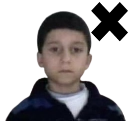

return
Número de fotos tomadas {{intentosNum}}
{{mensaje}}
{{mensaje}}
{{mensaje}}
Tomar foto

1. La cara debe estar claramente visible, sin obstrucciones.
2. La iluminación debe ser uniforme y no generar sombras pronunciadas en el rostro.
3. Evite cualquier tipo de accesorio facial, como gafas de sol o sombreros.
4. La posición de la cabeza debe ser frontal, evitando inclinaciones excesivas.